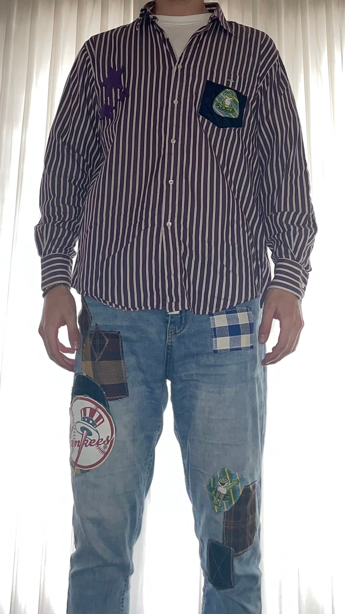

Proceslijn

Fase 1: kapot item
Je neemt je kapotte kledingsstuk mee. Deze bevat gaten/scheuren of het kledingsstuk kan de oorspronkelijke functie niet meer uitvoeren
Fase 2: Repareren
Samen met de werknemers en een kamer vol met materialen die hergebruikt kunnen worden, kan jij aan de slag om je kleding te repareren!

Fase 3: Nieuwe look!
Gefeliciteerd, je hebt je kleding een tweede leven gegeven!
Ik wil mijn oma bedanken voor het helpen met het naaiwerk van de kleding (zie bovenstaande afbeeldingen)